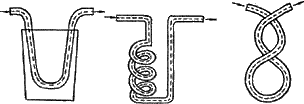

Самогон, водка и настойки. Брожение.

Дрожжи состоят из продолговатых клеточек величиной в поперечном сечении примерно 0,006 мм. В виде микроскопических клеток дрожжевые грибки распространены в воздухе повсюду. Их присутствие составляет необходимое условие для брожения сусла. Если сусло пропустить через фильтровальную бумагу и тем самым выделить из него дрожжевые грибки, то брожение остановится и не возобновится до тех пор, пока тем или иным путем дрожжевые грибки не попадут в сусло.
Чем больше сусло соприкасается с воздухом, в процессе перемешивания или переливки, тем больше грибков оно в себя вбирает и тем сильне идет процесс брожения и развития дрожжей.
Дрожжевые грибки не боятся ни света, ни влияния солнечных лучей, лишь бы температура не превышала 48 °C. Дрожжи имеют следующий химический состав: азотистые вещества – 62,73; клетчатка – 29,47; жировые вещества – 2,10; минеральные вещества – 5,80.
При различной температуре дрожжи имеют различную степень размножения.
Низшая температура, при которой дрожжевые грибки сохраняют свою жизнедеятельность, еще точно не определена. Но есть исследователи, считающие, что дрожжевые грибки могут сохранять способность возбуждать брожение даже при температуре ниже О °С.
Наивысшая температура, при которой дрожжи сохраняют способность возбуждать брожение сусла, различными исследователями определяется по-разному. Некоторые из них считают, что только при нагревании сусла до 70 °C можно достичь уничтожения совершенно всех зародышей брожения. Вино требует для этого меньшей температуры.
В процессе брожения ведро сусла выделяет около 300 г сырых дрожжей, которые дают приблизительно 46 % сухого вещества.
Дрожжевые грибки, как и всякие другие растения, нуждаются в пище. Ею являются азотистая кислота и вещества, входящие в состав золы. В особенности это калий и фосфорная кислота. Во всяком растительном соке и, следовательно, в соке винограда все питательные вещества находятся в большем или меньшем количестве. Поэтому сусло начинает бродить в том случае, когда в него попадут дрожжевые грибки. Развитие грибков может продолжаться лишь до тех пор, пока не истощатся питающие грибки вещества или не образуются такие соединения, которые тормозят, а затем и вовсе прекращают развитие грибков.
Под влиянием дрожжевых грибков в сусле происходят различные изменения: поверхность сусла принимает более или менее бурый цвет, появляются пузырьки от развивающейся угольной кислоты, шелуха поднимается вверх, образуя шляпу. Сладость постепенно исчезает, и все более развивается винный вкус. В сусле появляются новые вещества, такие как глицерин, янтарная кислота и др. Весь этот процесс называется брожением сусла. Одно из главных изменений, происходящих в сусле при брожении, состоит в превращении сахара в спирт и угольную кислоту, при этом образуются глицерин и некоторые другие вещества, но в сравнительно меньшем количестве. Определенное количество дрожжей может разложить лишь определенное количество сахара. Если дрожжей меньше, чем необходимо для разложения всего количества сахара, находящегося в сусле, или недостает питательных веществ для дальнейшего их развития, то брожение идет сначала медленно, а затем и вовсе прекращается, не разложив всего количества сахара. Вследствие этого сохраняется сладкий вкус. Так бывает с суслом, содержащим слишком большое количество сахара. Самое лучшее и выгодное соотношение сахара к воде 1:4 (1 часть – сахар). В натуральном соке редко бывает недостаток дрожжей или питающих веществ. Но в соке, разбавленном водой с добавлением сахара, эта часть увеличивается.
Вместе с дрожжевыми грибками в сусле развиваются и другие грибки, порождающие слизь, плесень, уксусную и молочную кислоты, а также болезни разного рода. Чтобы отдать приоритет дрожжевым грибкам и как можно больше затормозить развитие вредных микроорганизмов, рекомендуем проделать следующее. Во время общего сбора винограда лучшие здоровые и самые созревшие грозди нужно собирать в отдельную емкость. Затем из них выдавить сок и дать ему забродить. В дальнейшем это забродившее сусло поместить в сделанное позже. От добавления бродящего сусла немедленно возбуждается правильное спиртовое брожение.
Влияние температуры на ход брожения сусла
При температуре 4 °C брожение почти прекращается, но по мере повышения усиливается. При достижении 30 °C брожение начинает замедляться, а при 40 °C вовсе не происходит.
Брожение при температуре 25–30 °C подвергает вино опасным болезням, так как эта температура благоприятна для развития молочной, масляной и других кислот.
Кроме того, выяснилось, что до температуры 27 єС брожение постоянно ускоряется, а затем постепенно замедляется.
Что же касается развития букета, то температура 15–20 °C наиболее благоприятна.
Влияние воздуха на брожение
Дрожжевые грибки для своего развития и размножения требуют воздействия на них воздуха. Поэтому при слабом доступе воздуха сусло бродит несравненно медленнее, чем при свободном или усиленном потоке.
Влияние фильтрации на брожение
Фильтрация намного замедляет процесс брожения. На этом основании учащенной фильтрацией можно прекратить процесс брожения, достичь того, что вино останется сладким.
Влияние спирта на процесс брожения
При брожении часть сахара превращается в спирт. Но нужно иметь в виду, что спирт убивает дрожжевые грибки. Таким образом, в самом брожении кроется причина его прекращения. Если брожением или другим способом, например, простым добавлением спирта, его образуется по объему до 18 %, то брожение совершенно прекратится. Чем ниже температура, тем меньше процент спирта останавливает брожение.
Влияние посуды на брожение
Сусло бродит в большой посуде намного быстрее, чем в малой.
Созревание сусла для возбуждения в нем брожения
Холодное сусло бродит очень медленно. Поэтому, если температура сусла ниже 15 °C, следует прибегнуть к искусственному нагреванию. При нагревании сусла надо иметь в виду, что от брожения его температура значительно повышается. Если потребуется, чтобы сусло бродило (20–24 °C), то следует нагреть его до температуры 16–18 °C. Дальнейшее повышение температуры будет достигнуто в самом процессе брожения.
Нагреть сусло можно различными способами.
Первый способ.Можно повысить температуру в помещении, где поставлено сусло. Это наилучший способ, но он имеет отрицательные стороны. Если у нас сусла немного, то из-за него не стоит нагревать помещение. Бывает и так, что нет определенного помещения, где бы можно было довести температуру до нужного уровня. Поэтому предлагаем другой способ нагрева сусла.
Второй способ.Достаточно нагреть отдельную часть сусла до такой температуры, чтобы при смешивании ее с остальной частью вся масса была доведена до желаемой температуры. Нагреть сусло можно непосредственно в эмалированной или другой посуде. Этот способ представляет некоторое неудобство, так как появляется вкус вареного сусла, который затем переходит в вино. Вследствие этого нагревают не само сусло, а воду и держат в ней сосуд с суслом до тех пор, пока оно не достигнет желаемой температуры.
Как замедлить брожение
Известно, что брожение при низкой температуре замедляется, но по мере ее повышения усиливается. Поэтому для замедления брожения прибегают к охлаждению сусла. Это проделывается так же, как и согревание сусла, но лишь с той разницей, что вместо горячей воды пропускают холодную.
Согревание и охлаждение сусла можно проделать и другим, более эффективным способом. Для этого воспользуйтесь устройством на рис. 8.
Один конец подсоединяют к крану с нужной водой (горячей или холодной), а другой кладут в раковину для стека.
Вода, проходя через сусло, нагревает либо охлаждает его до нужной температуры.

Рис. 8. Устройство для согревания и охлаждения сусла
Как прекратить брожение
Брожение сусла можно приостановить введением в него сернистой кислоты. Для этого пустую бочку подкуривают обычным способом, затем вливают в нее около трех ведер вина, полощут им всю бочку и после этого вновь подкуривают серой. Затем опять заливают 3–4 ведра и так до тех пор, пока не заполнится вся бочка.
Брожение сусла прекращается в том случае, если:
1) сусло нагревается до температуры 40 °C и выше;
2) содержание спирта в сусле доводят до 18 % и выше;
3) фильтрацией удаляют все дрожжевые грибки.
Угарный газ (угольная кислота)
При брожении вина, в особенности при бурном брожении, выделяется угольная кислота, известная как угарный газ. Этот газ крайне вреден. Человек, вдыхая его, падает в обморок, а затем, если вовремя не оказать медицинскую помощь, может наступить смерть.
Для предупреждения подобных несчастных случаев необходимо принять следующие меры предосторожности при посещении погреба, в котором происходит брожение молодого вина:
1. Посещать помещение желательно вдвоем.
2. Идя в помещение, нужно захватить с собой свечу. Если она горит нормально, то можно заходить. Если же гаснет – это сигнал к тому, что входить в помещение опасно, так как там большое скопление угольной кислоты.
Угольная кислота в 1,5 раза тяжелее воздуха, следовательно, она скапливается и держится преимущественно внизу и поднимается вверх лишь по мере накопления. Поэтому свечу нужно держать низко, но не наклоняться.
Для удаления накопившейся угольной кислоты необходимо открыть все двери, отверстия, какие только есть в помещении. Одновременно внутрь ставят сосуд, в который бросают куски негашеной извести.
Если все же отравление угарным газом произошло, то потерпевшего необходимо вынести на свежий воздух и облить холодной водой.
Сахар
В готовом вине остаются лишь самые незначительные следы сахара, только в ликерных винах или приготовленных из высушенного винограда, или к которым при брожении был добавлен спирт, или иным образом было задержано брожение сусла содержится большое количество сахара. Если в обыкновенных слабых винах содержание сахара дойдет до 0,1–0,2 %, то уже чувствуется сладость. Некоторые вина сохраняют незначительное количество сахара довольно долго, поэтому присутствие сахара в вине еще не доказывает искусственного добавления.
Алкоголь
Алкоголь составляет одну из главных частей вина. От его содержания существенно зависят характер и прозрачность. 100 весовых частей сахара в сусле дают 48,4 части алкоголя в вине. Практики знают, что каждый процент сахара в сусле дает 0,5 % алкоголя в вине. Высшее содержание алкоголя, которое может развиться путем брожения винного сока, – 18 %. Более высокое содержание – это искусственная примесь. Содержание спирта в вине с годами уменьшается: вино теряет 0,25-0,5 % спирта в год.
Красящее вещество цветного винограда
Красящее вещество цветного винограда в воде мало растворимо. Немного больше растворяется в воде с кислотой, а лучше всего – в смеси разбавленного спирта с небольшим количеством кислоты. Окраска вина усиливается при переливке, освобождении:
а) от шелухи переспелых ягод;
б) от слишком высокой температуры;
в) от всякого мелкого истолченного порошка, в особенности содержащего белковые вещества;
г) от продолжительного воздействия воздуха и света.
Количество красящего вещества зависит исключительно от сорта винограда.
Экстрактивные вещества составляют осадок, полученный после выпаривания вина. Они, если можно так сказать, – тело вина, которое обусловливает вкус и густоту напитка. Содержание экстрактивного вещества составляет 1,4–3,0 %. В сладких винах его несравненно больше.
Минеральный состав вина мало влияет на его вкус.
Дубильное вещество принимается вином во время брожения сусла и немного при прессовании из шелухи, зерен и гребешков. В чистом же винограде его нет.